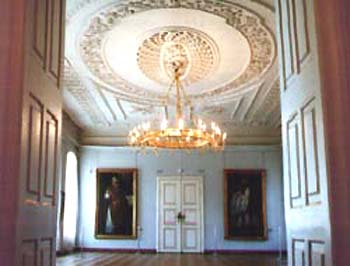
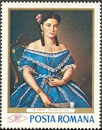

|
The National Brukenthal Museum in Sibiu Introduction |
The National Brukenthal Museum well-known as an institution of European prestige and the oldest of Romanian museums. Its collections were constituted by baron Samuel von Brukenthal (1721-1803), governor of Transylvania between 1777-1787. At that time the province of Transylvania, named also Ardeal in Romanian, was part of the Austro-Hungarian empire; it was also known under the German name of Siebenbürgen. The museum is located in the city of Sibiu, named in German Hermannstadt.
In 1790, and this is three years before the French Louvre was opened, the collections of Samuel von Brukenthal could be already publicly visited. But the official opening of the museum took place on the 25th of February 1817, Brukenthal being this way the first museum of the post-WWI Romania that has been functioning ever since.

The Art Gallery displays two main exhibitions: The Brukenthal Art Gallery, and The Romanian Art Gallery, as well as temporary exhibitions. The works of the Brukenthal Art Gallery had been acquired by baron von Brukenthal after 1750, mostly from the capital city of the Habsburg empire, Vienna. They belong to and illustrate the main European painting schools of the 15th - 18th centuries: Flemish-Dutch (450 pieces), Italian (200), German-Austrian (480), French and Spanish (20) .

The Romanian Art Gallery was added to the old nucleus of the Brukenthal’s collections much later, in 1950. It came to include the old collection of the ASTRA Museum and the numerous acquisitions (or requisitions) that had been made since that time. The works illustrate the Romanian art of the 15th-20th centuries. The present patrimony of this gallery exceeds 3,000 works. (After: http://www.verena.ro/brukenthal/)
Among these we would like to draw your attention upon the work of the Romanian painter Misu Popp (read Mishoo), born 1827 (dead 1892) in another bigger city of Transylvania named today Brasov.

It is a portrait of a beautiful women, in a wonderful blue dress, decorated by strips of white lace. The whole displays the elegance and refinement of the Transylvanian society toward the end of the 19th century.
The stamp was issued on March 28, 1968, in a set of six stamps and a souvenir sheet dedicated to great paintings in Romanian museums. The print run of the stamp was of 2,000,000 pieces, and of the complete set with the sheet of 150,000.
| Published:
07/14/2002. Revised:
07/29/02. Copyright © 2002 by Victor Manta, Switzerland. All rights reserved worldwide. |